pacman::p_load(tidyverse)
install.packages("ggplot2")Warning: package 'ggplot2' is in use and will not be installedlibrary(ggplot2)Author: “Peng Hsiao Yuan”
##1.2 Getting Started
The code chunk below uses p_load() of pacman package to check if tidyverse packages are installed in the computer.
If they are, they will be launched into R.
pacman::p_load(tidyverse)
install.packages("ggplot2")Warning: package 'ggplot2' is in use and will not be installedlibrary(ggplot2)exam_data <- read.csv("data/Exam_data.csv")ggplot(data=exam_data, aes(x = MATHS)) +
geom_histogram(bins=10,
boundary = 100,
color="black",
fill="grey") +
ggtitle("Distribution of Maths scores")
hist(exam_data$MATHS)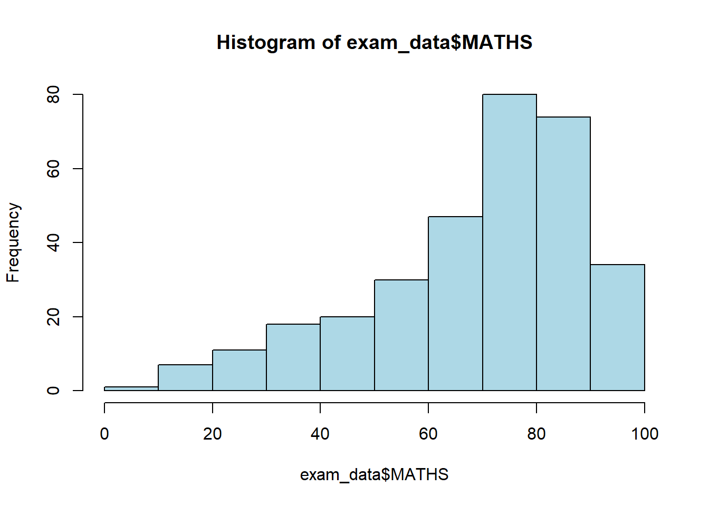
A short description of each building block are as follows:
Data: The dataset being plotted.
Aesthetics take attributes of the data and use them to influence visual characteristics, such as position, colours, size, shape, or transparency.
Geometrics: The visual elements used for our data, such as point, bar or line.
Facets split the data into subsets to create multiple variations of the same graph (paneling, multiple plots).
Statistics, statiscal transformations that summarise data (e.g. mean, confidence intervals).
Coordinate systems define the plane on which data are mapped on the graphic.
Themes modify all non-data components of a plot, such as main title, sub-title, y-aixs title, or legend background.
ggplot(data=exam_data)
Note: A blank canvas appears. ggplot() initializes a ggplot object. The data argument defines the dataset to be used for plotting. If the dataset is not already a data.frame, it will be converted to one by fortify().
ggplot(data=exam_data,
aes(x= MATHS))
geom_point for drawing individual points (e.g., a scatter plot)
geom_line for drawing lines (e.g., for a line charts)
geom_smooth for drawing smoothed lines (e.g., for simple trends or
approximations)
geom_bar for drawing bars (e.g., for bar charts)
geom_histogram for drawing binned values (e.g. a histogram)
geom_polygon for drawing arbitrary shapes
geom_map for drawing polygons in the shape of a map! (You can access the data to use for these maps by using the map_data() function).
ggplot(data=exam_data,
aes(x=RACE)) +
geom_bar()
ggplot(data=exam_data,
aes(x = MATHS)) +
geom_dotplot(dotsize = 0.5)Bin width defaults to 1/30 of the range of the data. Pick better value with
`binwidth`.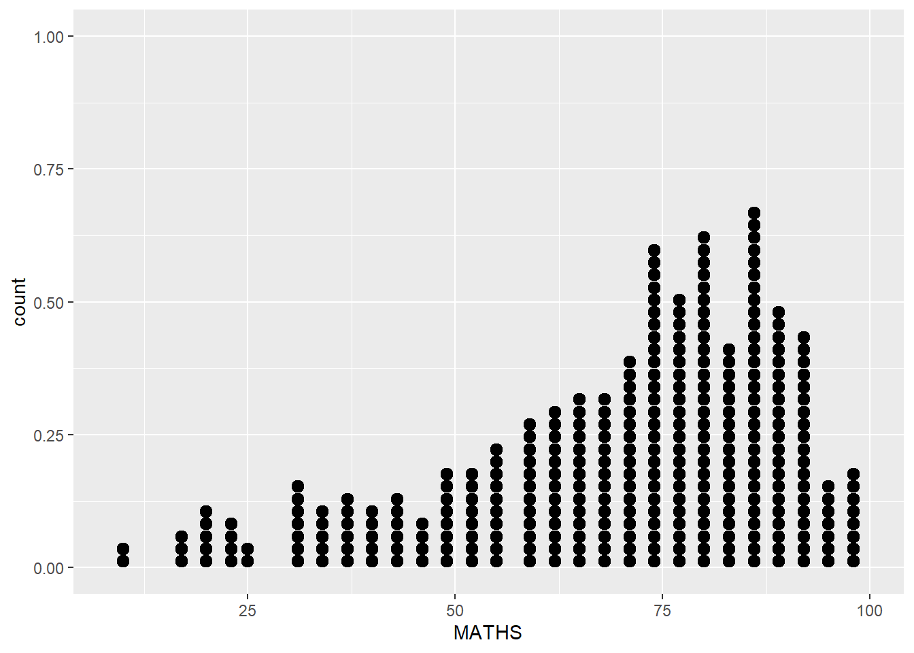
ggplot(data=exam_data,
aes(x = MATHS)) +
geom_histogram() `stat_bin()` using `bins = 30`. Pick better value with `binwidth`.
ggplot(data=exam_data,
aes(x= MATHS)) +
geom_histogram(bins=20,
color="black",
fill="light blue") 
ggplot(data=exam_data,
aes(x= MATHS,
fill = GENDER)) +
geom_histogram(bins=20,
color="grey30") +
scale_fill_manual(values = c("blue", "red"))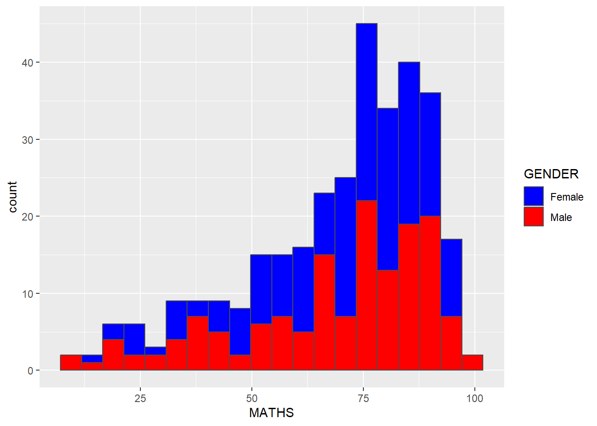
exam_data <- exam_data %>%
mutate(MATHS_GROUP = cut(MATHS, breaks = 10))
# Step 2: 先讓 MATHS_GROUP 依照區間排序
# 提取 levels 並反轉
levels_order <- levels(cut(exam_data$MATHS, breaks = 10))
levels_order <- rev(levels_order) # 反轉順序（高分在上）
# 再重新設定 MATHS_GROUP 為 factor
exam_data <- exam_data %>%
mutate(MATHS_GROUP = factor(MATHS_GROUP, levels = levels_order))
# Step 3: 計算每組男女的人數
pyramid_data <- exam_data %>%
group_by(MATHS_GROUP, GENDER) %>%
summarise(count = n(), .groups = "drop")
# Step 4: 女性取負
pyramid_data <- pyramid_data %>%
mutate(count = ifelse(GENDER == "Female", -count, count))
# Step 5: 繪製金字塔圖
ggplot(pyramid_data, aes(x = MATHS_GROUP, y = count, fill = GENDER)) +
geom_bar(stat = "identity", position = "identity") +
coord_flip() +
scale_y_continuous(labels = abs) +
labs(x = "MATHS 分數區間", y = "人數", title = "數學成績金字塔圖") +
scale_fill_manual(values = c("green", "navy")) +
theme_minimal()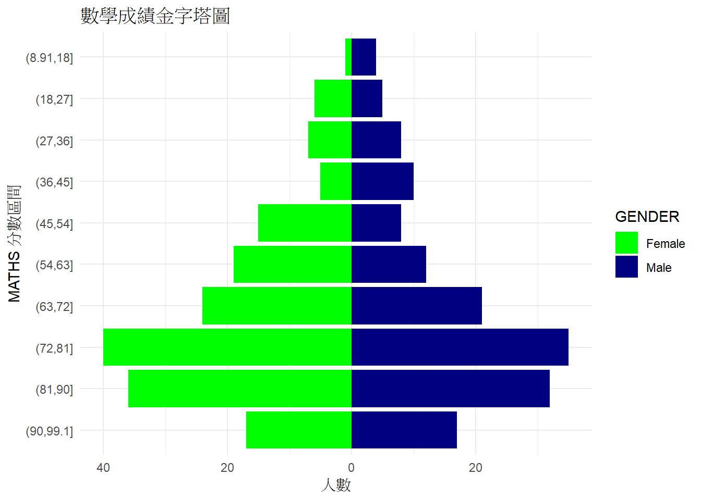
ggplot(data=exam_data,
aes(x = MATHS)) +
geom_density() 
The code chunk below plots two kernel density lines by using colour or fill arguments of aes()
ggplot(data=exam_data,
aes(x = MATHS,
colour = GENDER)) +
geom_density()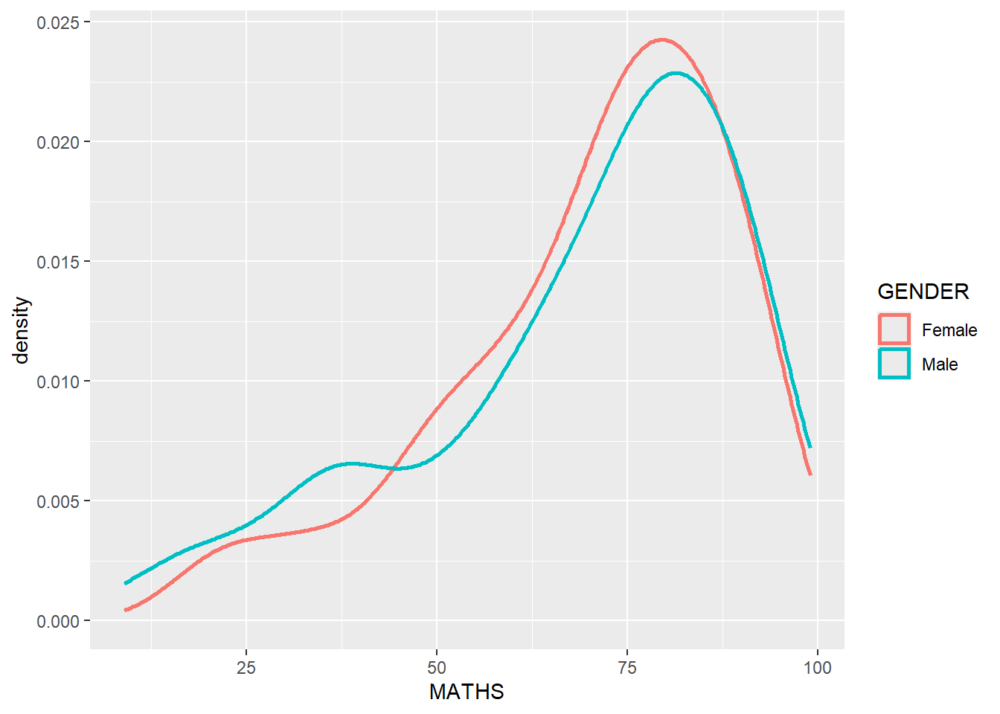
geom_boxplot() displays continuous value list. It visualises five summary statistics (the median, two hinges and two whiskers), and all “outlying” points individually.
ggplot(data=exam_data,
aes(y = MATHS,
x= GENDER)) +
geom_boxplot() 
The code chunk below plots the distribution of Maths scores by gender in notched plot instead of boxplot.
ggplot(data=exam_data,
aes(y = MATHS,
x= GENDER)) +
geom_boxplot(notch=TRUE)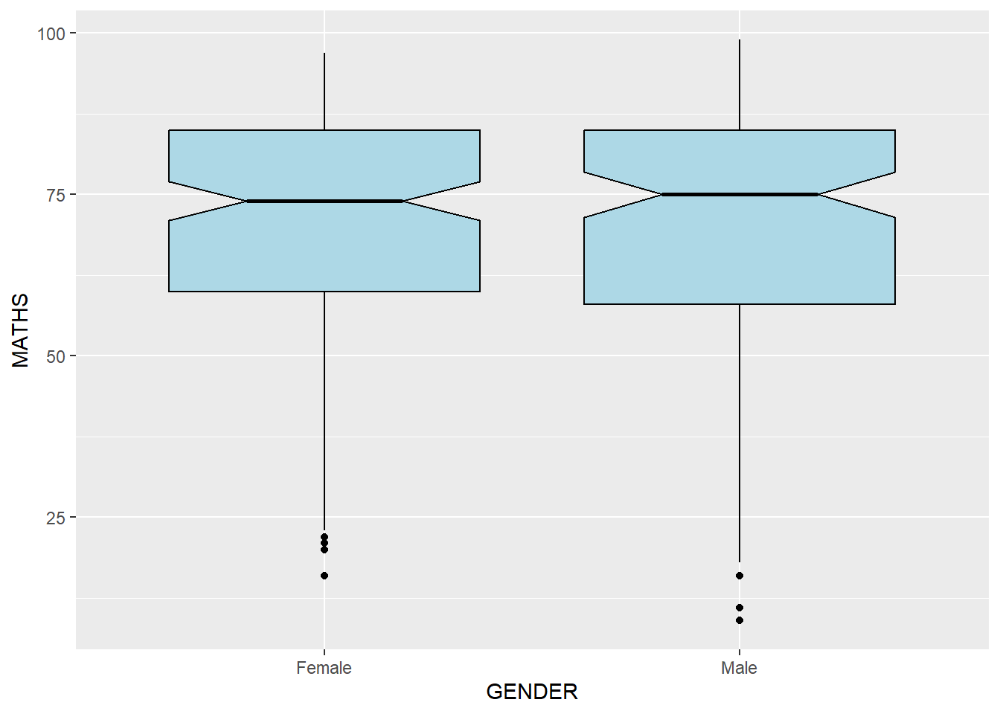
geom_violin is designed for creating violin plot. Violin plots are a way of comparing multiple data distributions. With ordinary density curves, it is difficult to compare more than just a few distributions because the lines visually interfere with each other. With a violin plot, it’s easier to compare several distributions since they’re placed side by side.
ggplot(data=exam_data,
aes(y = MATHS,
x= GENDER)) +
geom_violin()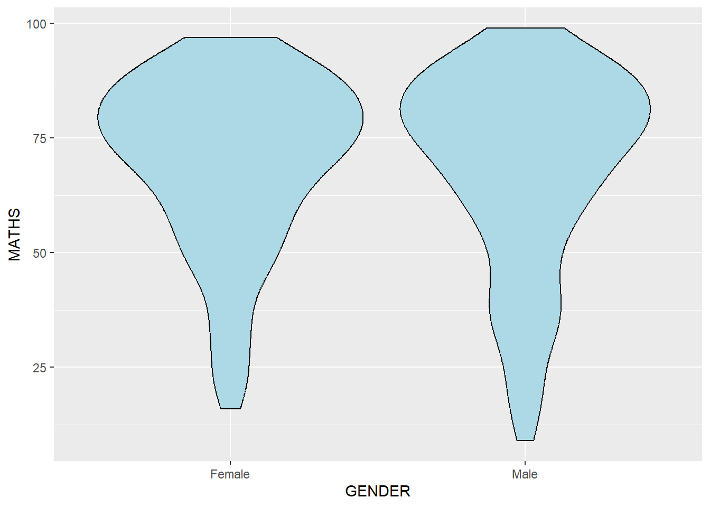
geom_point() is especially useful for creating scatterplot.
ggplot(data=exam_data,
aes(x= MATHS,
y=ENGLISH)) +
geom_point() 
ggplot(data=exam_data,
aes(y = MATHS,
x= GENDER)) +
geom_boxplot() +
geom_point(position="jitter",
size = 0.5) 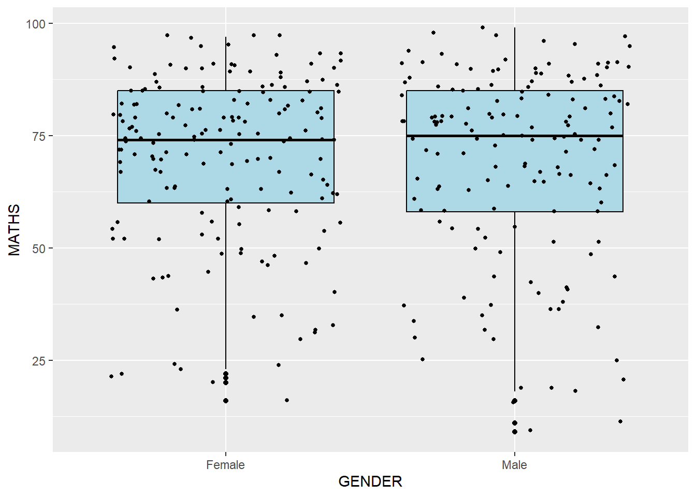
The Statistics functions statistically transform data, usually as some form of summary. For example:
frequency of values of a variable (bar graph) a mean a confidence limit There are two ways to use these functions: add a stat_() function and override the default geom, or add a geom_() function and override the default stat. ## 1.8.1 Working with stat()
ggplot(data=exam_data,
aes(y = MATHS, x= GENDER)) +
geom_boxplot()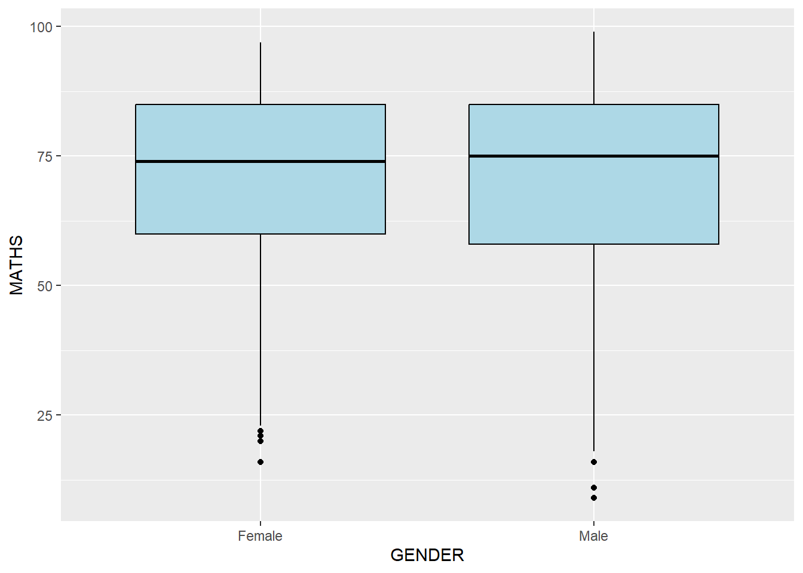
ggplot(data=exam_data,
aes(y = MATHS, x= GENDER)) +
geom_boxplot() +
stat_summary(geom = "point",
fun = "mean",
colour ="red",
size=4) 
ggplot(data=exam_data,
aes(y = MATHS, x= GENDER)) +
geom_boxplot() +
geom_point(stat="summary",
fun="mean",
colour="red",
size=4) 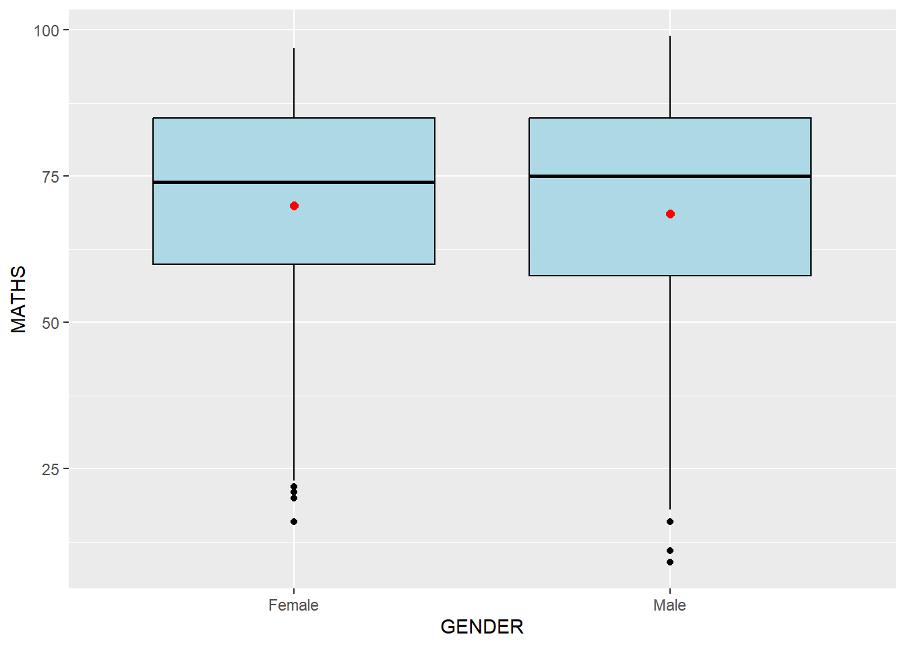
The scatter-plot below shows the relationship of Maths and English grades of pupils. The interpretability of this graph can be improved by adding a best fit curve. In the code chunk below, geom_smooth() is used to plot a best fit curve on the scatter-plot.
ggplot(data=exam_data,
aes(x= MATHS, y=ENGLISH)) +
geom_point() +
geom_smooth(size=0.5)Warning: Using `size` aesthetic for lines was deprecated in ggplot2 3.4.0.
ℹ Please use `linewidth` instead.`geom_smooth()` using method = 'loess' and formula = 'y ~ x'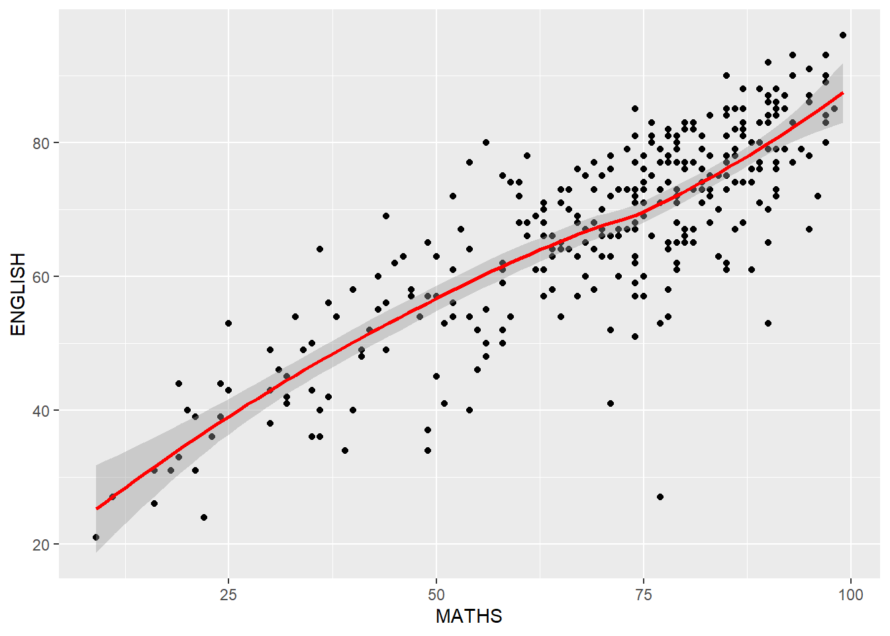
ggplot(data=exam_data,
aes(x= MATHS,
y=ENGLISH)) +
geom_point() +
geom_smooth(method=lm,
linewidth=0.5)`geom_smooth()` using formula = 'y ~ x'
facet_wrap wraps a 1d sequence of panels into 2d. This is generally a better use of screen space than facet_grid because most displays are roughly rectangular.
ggplot(data=exam_data,
aes(x= MATHS)) +
geom_histogram(bins=20) +
facet_wrap(~ CLASS)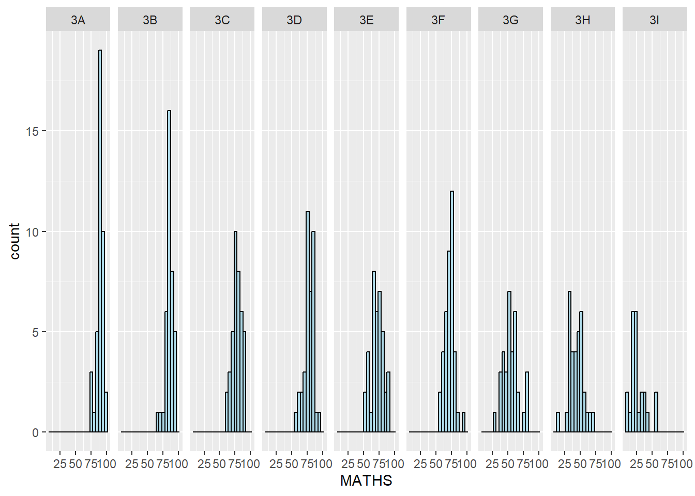
facet_grid() forms a matrix of panels defined by row and column facetting variables. It is most useful when you have two discrete variables, and all combinations of the variables exist in the data.
ggplot(data=exam_data,
aes(x= MATHS)) +
geom_histogram(bins=20) +
facet_grid(~ CLASS)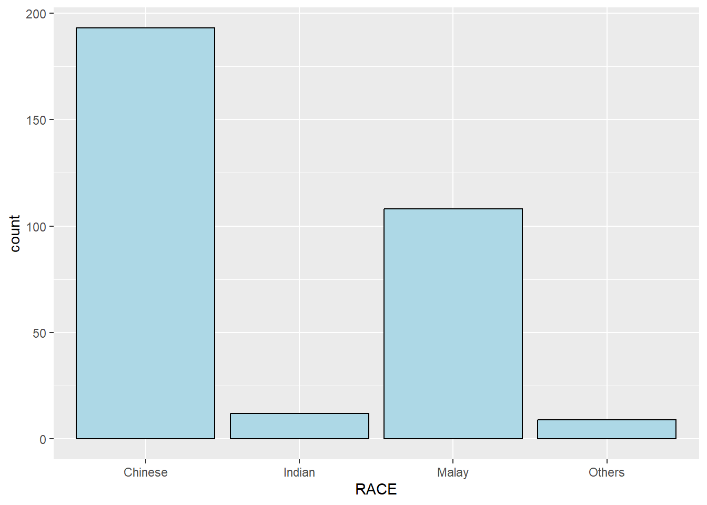
ggplot(data=exam_data,
aes(x=RACE)) +
geom_bar()
ggplot(data=exam_data,
aes(x=RACE)) +
geom_bar() +
coord_flip()
ggplot(data=exam_data,
aes(x= MATHS, y=ENGLISH)) +
geom_point() +
geom_smooth(method=lm, size=0.5)`geom_smooth()` using formula = 'y ~ x'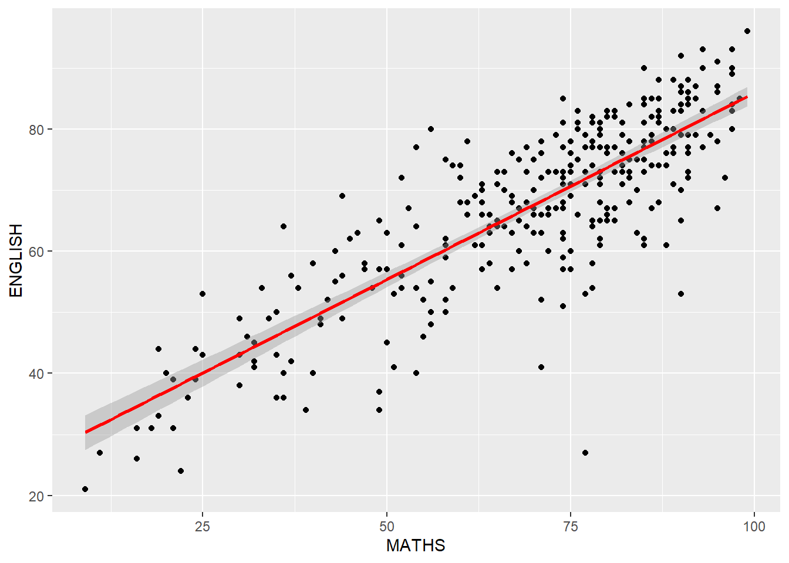
ggplot(data=exam_data,
aes(x= MATHS, y=ENGLISH)) +
geom_point() +
geom_smooth(method=lm,
size=0.5) +
coord_cartesian(xlim=c(0,100),
ylim=c(0,100))`geom_smooth()` using formula = 'y ~ x'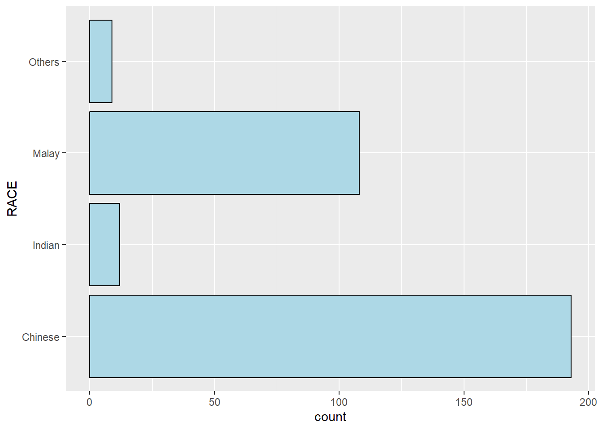
ggplot(data=exam_data,
aes(x=RACE)) +
geom_bar() +
coord_flip() +
theme_gray()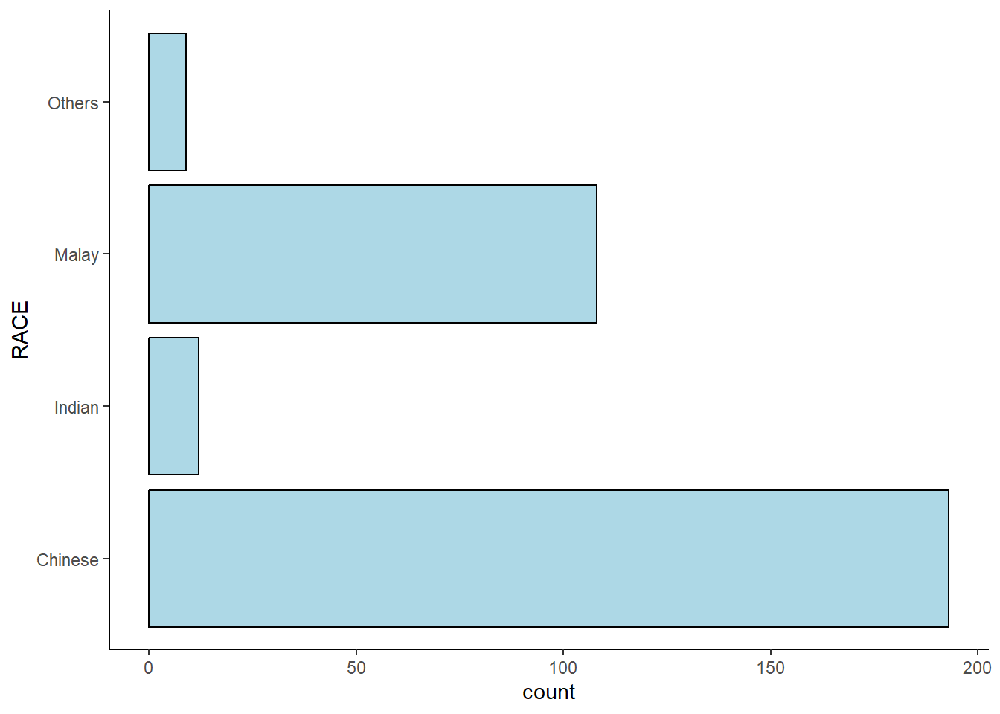
A horizontal bar chart plotted using theme_classic().
ggplot(data=exam_data,
aes(x=RACE)) +
geom_bar() +
coord_flip() +
theme_classic()